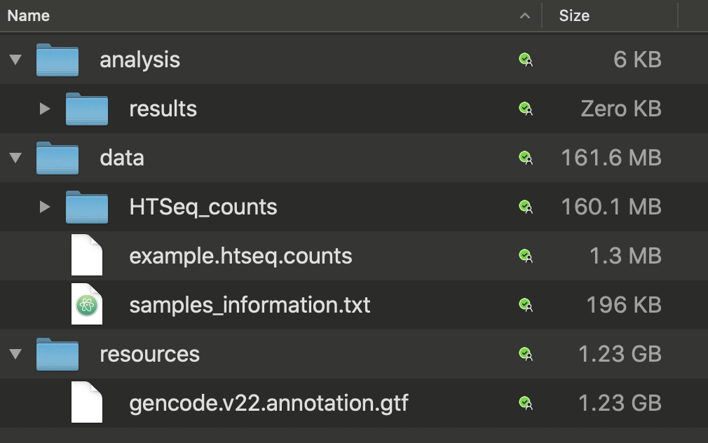

Differential Gene Expression Analysis
RNA-seq Data Analysis course, EBI, April 2020
2020-04-08
1 Introduction
This is a practical tutorial illustrating analysis of Differentially Expressed Genes (DEGs) in RNA-seq data using DESeq2 and edgeR packages. This tutorial avoids discussing statistical concepts that underlie the analysis, such as normalization, generalised regression models, distribution of counts etc. These aspects will be discussed separately in accompanying lecture slides. The only conceptual point that we touch here is the “borrowing” of data between genes during the dispersion (variance) assessment.
1.1 Dispersion assessment
Most of the current tools for Differential Gene Expression analysis in RNA-seq data (including DESeq2 and edgeR) were developed at the time when RNA-seq was quite expensive, so the researchers could only analyse a small number of samples (e.g. less than 10 per group). The small number of samples led to a very large dispersion (variance) estimates in each separate gene. Thus, the statisticians had to “borrow” data between samples and genes to facilitate a meaningful analysis. Initially the statisticians suggested to estimate “average” dispersion using all the genes and samples together. This provided much narrower estimates. However, it was open to criticism because the dispersion in RNA-seq counts depends on the gene expression. Thus, the next step was to model a gene dispersion using only the genes with similar level of expression. This approach was adopted in edgeR and in DESeq2 packages.
In essense, these packages estimate each individual gene dispersion using two components:
- the actual dispersion observed for the gene
- the dispersion of other genes with a similar level of expression
When the number of samples is sufficiently large, DESeq2 and edgeR put most of the weight on the first component. When the number of samples is small, the actual dispersion estimates are too broad for a meaningful analysis, so the final estimate “shrinks” toward the second component. In other words, the degree of data “borrowing” is reduced if a large number of samples is available.
1.2 Bioconductor’s tutorials
Currently (in April 2020) Bioconductor provides several good practical tutorials in RNA-seq Differential gene expresion, including:
- DESeq2: https://www.bioconductor.org/packages/devel/workflows/vignettes/rnaseqGene/inst/doc/rnaseqGene.html
- edgeR : http://bioconductor.org/packages/release/bioc/vignettes/edgeR/inst/doc/edgeRUsersGuide.pdf
- limma-voom and edgeR: https://master.bioconductor.org/packages/release/workflows/vignettes/RNAseq123/inst/doc/limmaWorkflow.html
It is highly advised to study these tutorials along with the present one. They will provide different perspectives to the analysis and lots of additional practical information (sometimes, even too much infromation :) Noteworthy, the DESeq2 Bioconductor tutorial discusses in detail the modern data import packages, like tximport and tximeta for data input from the modern pseudo-alignment tools like Salmon.
1.3 Default threshiolds
Importantly, the Bioconductor tutorials illustrate the data analysis using small datasets (typically, less than 10 samples). To provide an alternative perspective, here we analyse a dataset consisting of hundreds of samples. This analysis illustrates that some of the packages’ default settings (i.e. DESeq’2 default no-change null hypothesis and 0.1 FDR threshold) may suggest an unrealistically large proportion of Differentially Expressed Genes (DEGs), when a large number of samples is available for significantly differet biological conditions. For instance, more than a half of the genes are suggested to be DEGs using the default DESeq2 thresholds in our analysis. Adjusting the thresholds, for instance, to 2-fold change at FDR < 0.01 brings the number of suggested DEGs to around 10%, which looks more realistic (and consistent with a common assumption that DEGs should constitute only a minority of genes).
1.4 TCGA
Data for this tutorial was obtained from TCGA project:
TCGA provides multiple types of data (including clinical annotations, germline and somatic DNA-sequencing, RNA-sequencing and epigenomic data) for multiple types of human cancer. The dataset has data for hundreds of clinical biopsies for each type of studied cancer, sometimes with paired normal tissue.
1.4.1 TCGA data access
TCGA data, which may identify individual patients (such as raw sequencing data) are protected. However, RNA-Seq counts at gene-level are provided with open access. For this tutorial we use a set of selected TCGA Breast Cancer cases (TCGA-BRCA).
TCGA provides RNA-seq counts in several formats, including raw counts generated by HTSeq and normalised counts (FPKM and FPKM-UQ normalised). Importantly, DESeq2 and edgeR require raw counts for analysis.
Selected clinical annotations were extracted from TCGA xml annotation files using a set of in-house scripts. In addition to xml files, TCGA provides clinical annotations in plain tabulated format (txt format). However, these txt files have less annotations than the source xml files. Also, at the time of preparing these notes (beginnig of 2020), I experienced some bugs in retrieval of txt files from TCGA.
1.4.2 TCGA RNA-seq pipeline
Information about TCGA pipeline upstream of the HTSeq counts is available here:
The TCGA pipeline represents a good example of cutting-edge RNA-seq analysis, how it was performed several years ago. Importantly, it says that RNA-seq counts were generated using GENCODE v.22 gene annotations, which we will use later in this analysis.
1.5 Tutorial structure
This tutorial is written in R-markdown, where chunks of code are combined with the output.
1.5.1 Samples and Genes
First we will read and explore data for samples and genes. The source files include more information than we need, so only the information required for this analysis will be extracted.
1.5.2 DESeq2 analysis
Then the data is imported into the DSEq2 data set and the dataset is explored.
As a part of exploration, the data will be variance-normalised, which is required for PCA and Hierarchical Clustering. Importantly, this normalization is used for data exploration only. The actual differential expression analysis will use non-normaliased raw data.
Then the differential expression analysis will be done (DSEq2 does it with just a single line of code :)
Finally the results of differential expression analysis are extracted and explored: including technical data (variance adjustments plot), a table with with top differentially extracted genes, and several ways of visualising the results (MA plot, Volcano plot and Hierarchical Clustering).
Importantly, first we will extract results using the default settings (H0 of no change at 0.1 FDR), which will suggest unsralisticaly hight number of DEGs. Then we will adjust the settings (H0 of less than 2-fold change at 0.01 FDR) to obtain a meaninful result.
1.5.3 edgeR analysis
A similar analysis will be performed using edgeR, except for Hierarchical clustering, which will not be repeated using edgeR data.
1.5.4 Comparison of DEGs
The lists of DEGs be compared between DESeq2 and edgeR to show a reasonable concordance between the methods.
Importantly, this tutorial is not concerned about the biological interpretation of the results (although the it confirms the previously known ER-related genes in breast cancer). The aim of this tutorial is to give an example of a practical use of DESeq2 and edgeR for differential gene analysis in RNA-seq data.
1.6 Content of the base folder
The analysis expects a base-folder, which contains sub-folders and files as ilustrated below:

For convinience, the counts data, the samples information file and gencode.v22 gtf file were downloaded to local storage, as shown.